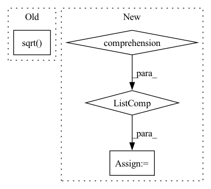

Pattern ID :29458
Before Change
D = pre_dist_mat[bi]**2
M = D[:1, :] + D[:, :1] - D
u,s,v = torch.svd_lowrank(M/2)
preds_3d.append( (u@torch.diag(s).sqrt() )[:, :3].t() )
return torch.stack(preds_3d, dim=0), torch.zeros_like(torch.stack(his, dim=0))
else:
if verbose:After Change
// https://discuss.pytorch.org/t/batched-svd-lowrank-being-much-slower-than-loop-implementation-both-cpu-and-gpu/119336
svds = [torch.svd_lowrank(mi) for mi in M]
u = torch.stack([svd[0] for svd in svds], dim=0)
s = torch.stack([svd[1] for svd in svds] , dim=0)
v = torch.stack([svd[2] for svd in svds], dim=0)
preds_3d = torch.transpose( torch.bmm(u, torch.diag_embed(s).sqrt())[..., :3], -1, -2)
In pattern: SUPERPATTERN
Frequency: 3
Non-data size: 4
Instances Fragment ID: 87402193
Project Name: lucidrains/alphafold2
Commit Name: c3e564efd689bff4df9759b2855bdbb6dcd1b67b
Time: 2021-04-25
Author: ericalcaide1@gmail.com
File Name: alphafold2_pytorch/utils.py
M Class Name: AnonimousClass
N Class Name: AnonimousClass
M Method Name: mds_torch(6)
N Method Name: mds_torch(6)
M Parent Class:
N Parent Class:
M File Name: alphafold2_pytorch/utils.py
N File Name: alphafold2_pytorch/utils.py
M Start Line: 650
M End Line: 668
N Start Line: 645
N End Line: 671
Before Change
set1_centre = set1.mean(-1).view(-1, 1)
set2_centre = set2.mean(-1).view(1, -1)
distance = (set1_centre - set2_centre).pow(2).pow(0.5).max(-1)[0].max(-1)[0]
delta_list = [distance / np.sqrt( 2 * (i + 1)) for i in range(kernel_num)]
bandwidth_list = [((2 * delta ** 2)).detach() for delta in delta_list]
return bandwidth_list
After Change
particle_num = first_kernel.size(-1)
kernel_num
scale_list = list(np.linspace(min_scale, max_scale, num=kernel_num))
bandwidth_list = [(kernel_mean * scale).view(-1, 1, 1).detach() for scale in scale_list]
first_items = 0
third_items = 0
for h in bandwidth_list:
first_inner_distance = (-first_kernel / h).exp() Fragment ID: 87402184
Project Name: deligentfool/dqn_zoo
Commit Name: 1ac00bac8d92870064cdcf754b6e29278f14ae79
Time: 2020-11-04
Author: 1027660817@qq.com
File Name: MMD_DQN/mmd_dqn.py
M Class Name: AnonimousClass
N Class Name: AnonimousClass
M Method Name: calc_bandwidth(5)
N Method Name: calc_bandwidth(3)
M Parent Class:
N Parent Class:
M File Name: MMD_DQN/mmd_dqn.py
N File Name: MMD_DQN/mmd_dqn.py
M Start Line: 33
M End Line: 40
N Start Line: 18
N End Line: 33
Before Change
if low_rank:
low_rank = int(low_rank)
else:
low_rank = int(math.sqrt( (self.state_rank * self.measure_rank) / (self.state_rank + self.measure_rank)) )
self.lr1 = torch.nn.Parameter(.1 * torch.randn(self.state_rank, low_rank))
self.lr2 = torch.nn.Parameter(.1 * torch.randn(low_rank, self.measure_rank))
else:After Change
self.state_rank = state_rank
self.measure_rank = measure_rank
self.full_states = [i for i in range(self.state_rank) if i not in fixed_states]
self.init_bias = init_bias
self.unconstrained_params: Optional[torch.nn.Parameter] = None
self.lr1: Optional[torch.nn.Parameter] = None
self.lr2: Optional[torch.nn.Parameter] = None
if method == "full":
self.method = method
self.unconstrained_params = torch.nn.Parameter(.1 * torch.randn(self.measure_rank * len(self.full_states)))
elif method.startswith("low_rank"):
if measure_rank == 1:
warn("Using `method="low_rank"` with 1 measure")
self.method = "low_rank"
low_rank = method.replace("low_rank", "")
if low_rank:
low_rank = int(low_rank)
else:
ub = (len(self.full_states) * self.measure_rank) / (len(self.full_states) + self.measure_rank)
low_rank = int(math.sqrt(ub))
self.lr1 = torch.nn.Parameter(.1 * torch.randn(len(self.full_states), low_rank))
self.lr2 = torch.nn.Parameter(.1 * torch.randn(low_rank, self.measure_rank))
else: Fragment ID: 87402171
Project Name: strongio/torchcast
Commit Name: f47fb0ea7f8de78c4034c228363a96dc283c6d75
Time: 2021-06-28
Author: jacob.dink@strong.io
File Name: torchcast/exp_smooth/smoothing_matrix.py
M Class Name: SmoothingMatrix
N Class Name: SmoothingMatrix
M Method Name: __init__(8)
N Method Name: __init__(8)
M Parent Class: torch.nn.Module
N Parent Class: torch.nn.Module
M File Name: torchcast/exp_smooth/smoothing_matrix.py
N File Name: torchcast/exp_smooth/smoothing_matrix.py
M Start Line: 61
M End Line: 88
N Start Line: 60
N End Line: 84